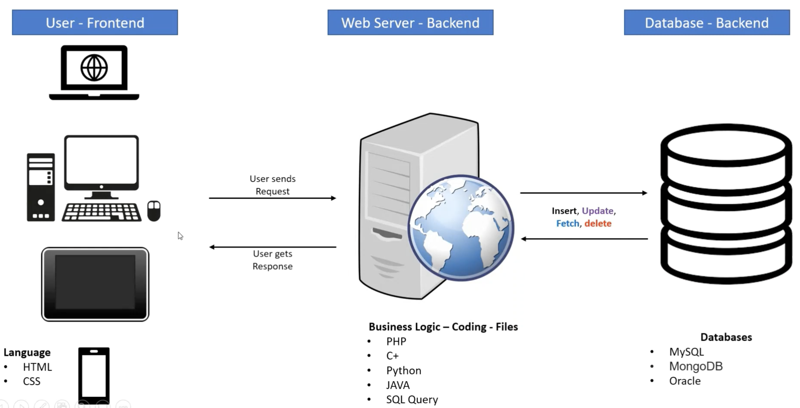

Web Development Framework

Programming languages used in most popular websites
Front-End (Client-side)

- ★ HTML
to define the content of web pages.
- ★ CSS
to specify the layout of web pages.
.
- ★ JavaScript
to program the behavior of web pages.
.
- ★
Demo
Back-End (Server-side)
- ★ PHP is a
server scripting language
, and a powerful tool for making dynamic and interactive Web pages.
- ★ PHP scripts are
executed on the server
.
- ★ PHP files can contain text, HTML, CSS, JavaScript, and PHP code
- ★ PHP can add, delete, modify data in your database.
- ★ PHP can generate dynamic page content.
- ★ PHP can create, open, read, write, delete, and close files on the server.
- ★ PHP can collect form data.
DataBase
- ★ SQL is a standard language for storing, manipulating and retrieving data in databases.
- ★ SQL is a query programming language for managing RDBMS (Relational Database Management System).
- ★
MySQL is an RDBMS
that employs SQL.
- ★ MySQL is software, but
SQL is a database language
.
- ★ Demo
XAMPP
- ★ XAMPP is the most popular PHP
development environment.
- ★
XAMPP = Apache + MariaDB + PHP + Perl
Reference